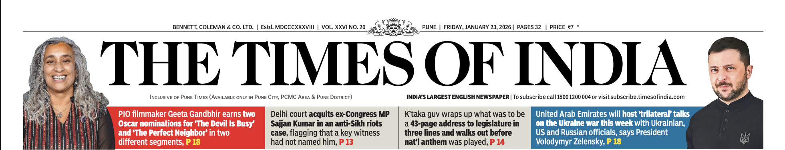
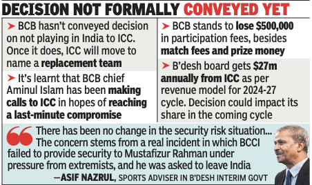
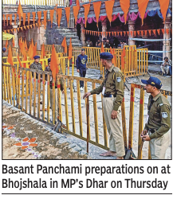
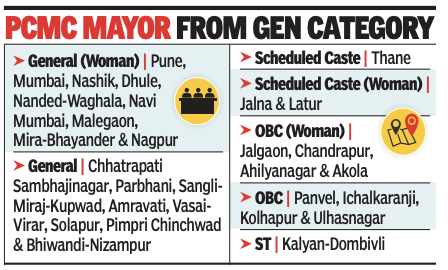

<!DOCTYPE html>
<html lang="en">
<head>
    <meta charset="UTF-8">
    <meta name="viewport" content="width=device-width, initial-scale=1.0">
    <title>newspaper</title>
    <link href="https://cdn.jsdelivr.net/npm/bootstrap@5.3.8/dist/css/bootstrap.min.css" 
    rel="stylesheet" integrity="sha384-sRIl4kxILFvY47J16cr9ZwB07vP4J8+LH7qKQnuqkuIAvNWLzeN8tE5YBujZqJLB" 
    crossorigin="anonymous">
</head>
<body>
      <section>
            <div class="container-fluid">
                
            </div>

            <div class="container-fluid mt-3">
                <div class="row">
                    <!-- Left Side Section-->
                    <div class="col-md-6">
                        <div class="row">
                            <div class="col-md-3">
                                 <h4>Meitei visiting
                                    Kuki fiancée shot
                                    dead on camera
                                </h4>
                                 <p>
                                    AMeitei man visiting his
                                    Kuki fiancée in Manipur’s
                                    hill district of Churachandpur
                                    was abducted
                                    from her home and shot dead
                                    on camera Wednesday
                                    evening, a killing that jolted
                                    the state with graphic footage,
                                    street protests and an order
                                    for an NIA probe. P 12
                                 </p>

                                 <h4>
                                    India condemns
                                    SFJ vandalism at
                                    Croatia mission
                                 </h4>
                                 <p>
                                    The Indian govt said it has
                                    raised with Croatia the
                                    Jan 22 vandalism of the Indian
                                    embassy in Zagreb by
                                    members of terrorist group
                                    Sikhs for Justice, who tried
                                    to replace the tricolour with
                                    a“Khalistan flag”, and asked
                                    authorities to bring the perpetrators
                                    to justice. P 14
                                 </p>

                                 <h4 class="text-danger">
                                    Traffic curbs from
                                    noon-4pm today
                                    for cycling event
                                 </h4>
                                 <p>
                                    Traffic curbs will be in
                                    place on key roads in the
                                    city from noon to 4pm for the
                                    final stage of the Pune Grand
                                    Tour, which will start from Balewadi
                                    and end at Balgandharva
                                    Rangmandir on JM Road.
                                    Log on to bpgt2026.punepolice.
                                    gov.in to track the cyclists’
                                    live movement and plan your
                                    travel accordingly. P 2
                                 </p>

                                 <h4>
                                    US SEC seeks to
                                    email Adanis to
                                    serve summons
                                 </h4>
                                 <p>
                                    The US SEC has asked a
                                    US court for permission
                                    to email summons to Gautam
                                    Adani and group executive
                                    Sagar Adani over alleged
                                    fraud and bribery after
                                    two rejections by govt, filings
                                    of Jan 21 show. P 19
                                 </p>

                                 <h4>
                                    Airfares hit the
                                    roof over long
                                    R-Day weekend
                                 </h4>
                                 <p>
                                    The long R-Day weekend
                                    has airfares hitting the
                                    roof. A one-way fare for a person
                                    from Pune to Delhi is unusually
                                    high at Rs 12,000 and
                                    to Kolkata at Rs 13,000. Fares
                                    to foreign destinations have
                                    also surged this weekend. P 5
                                 </p>
                                <div class="bg-info p-3">
                                 <h4 class="text-danger" >
                                    Jail affair: Two
                                    on life term for
                                    murder to marry
                                 </h4>
                                 <p>
                                    Two convicts serving life
                                    terms — Priya Seth, 34,
                                    in a 2018 “suitcase murder”
                                    case, and Hanuman Prasad,
                                    29, for multiple killings in
                                    2017 — walked out on 15-day
                                    parole to get married. Their
                                    relationship developed at an
                                    open-air jail in Jaipur. P 14
                                 </p>
                                </div>

                                <h4>
                                    6 workers die, 5
                                    injured in blast
                                    at steel unit
                                </h4>
                                <p>
                                    Six workers from Bihar
                                    and Jharkhand were killed
                                    and five seriously injured
                                    after a coal kiln exploded
                                    at a sponge iron plant
                                    of Real Ispat & Power Ltd in
                                    Chhattisgarh Thursday.
                                    More are feared trapped. P 12
                                </p>

                                <h4>
                                    Man shoots wife
                                    ‘accidentally’,
                                    turns gun on self
                                </h4>
                                <p>
                                    Congress MP Shaktisinh
                                    Gohil’s nephew Yashrajsinh
                                    Gohil allegedly shot his
                                    wife “accidentally” in the head
                                    with a licensed revolver in
                                    their Ahmedabad flat and
                                    then turned the gun on himself,
                                    police said. P 13
                                </p>

                                <h4>
                                    Newborn snatched
                                    by monkey, thrown
                                    into well; survives
                                </h4>
                                <p>
                                    A20-day-old girl survived
                                    miraculously after a monkey
                                    snatched her from her
                                    mother’s arms in their home’s
                                    porch and threw her into
                                    an open well in Sevni village
                                    in Chhattisgarh’s Janjgir-
–                                   Champa district. P 12
                                </p>
                            </div>

                            <div class="col-md-9">
                                 <h1 class="fs-1">Bangladesh stays firm
                                     on not playing in India
                                 </h1>

                                 <div class="row">
                                    <div class="col-md-4">
                                        <h5>
                                            ‘Will Again Ask
                                            ICC To Shift Our
                                            WC Games To SL’
                                        </h5>
                                        <h6>
                                            Ahsan Tasnim & Arani Basu TNN
                                        </h6>
                                        <p>
                                            Dhaka/New Delhi: Bangladesh
                                            on Thursday said its cricket
                                            team will not travel to India
                                            for the upcoming T20 World
                                            Cup due to “genuine security
                                            risks”. On Wednesday, the International
                                            Cricket Council board
                                            had dismissed Bangladesh’s
                                            concerns regarding the
                                            safety of its players and fans in
                                            India, and rejected their demand
                                            that the team’s games be
                                            shifted out of India.
                                            “We’ll go back to ICC with
                                            our plan to play in Sri Lanka,”
                                            BCB president Aminul Islam said.
                                            “They gave us a 24-hour ultimatum
                                            but a global body can’t
                                            really do that. ICC will miss out
                                            on 200 million viewers (if Bangladesh
                                            is axed). It will be their
                                            loss...” BCB was responding to
                                            ICC’s deadline, after a meeting
                                            Thursday between board officials,
                                            players and the interim
                                            govt’s sports adviser. Bangladesh
                                            could be replaced by another
                                        </p>
                                    </div>

                                    <div class="col-md-8">
                                          

                                        <div class="row">
                                            <div class="col-md-6">
                                            <p>
                                            team in the Feb 7-Mar 8
                                            World Cup.
                                            “Bangladesh is not travelling
                                            to India to play the World
                                            Cup due to security risk — this
                                            is a decision made by Bangladesh
                                            govt. No other entity has
                                            any right to take this decision,”
                                            sports adviser in the Muhammad
                                            Yunus-led interim govt
                                            Asif Nazrul said.
                                            Nazrul’s statement overrode
                                            Bangladesh Cricket Board’s
                                            attempts to negotiate and directly
                                            challenged the ICC’s insistence
                                            on the original schedule.
                                            “There has been no
                                            change in the security risk situation
                                            regarding playing in
                                            India at present. This concern
                                            </p>
                                           </div>

                                           <div class="col-md-6">
                                               <p>
                                                  concern
                                                  is not based on any abstract
                                                  or hypothetical idea.
                                                  Rather, the concern stems
                                                  from a real incident in which
                                                  the Indian cricket board
                                                  (BCCI) failed to provide security
                                                  to one of our top players
                                                  (Mustafizur Rahman) under
                                                  pressure from extremists, and
                                                  he was asked to leave India,”
                                                  Nazrul said. The BCB and Nazrul,
                                                  however, said Bangladesh
                                                  still hopes ICC will do justice.
                                                  There are many precedents in
                                                  the world where matches are
                                                  played at a different venue due
                                                  to security risks and “we have
                                                  not given up hope yet”, he said
                                               </p>
                                           </div>  
                                         </div>      
                                    </div>
                                    </div>

                                    <div class="row">
                                        <div class="col-md-4">
                                            <h4>
                                                CM: Tatas pledged
                                                `1 L cr of `30 L cr
                                                MoUs in Davos
                                            </h4>
                                            <p>
                                                Nagpur/Mumbai: The Tata
                                                group has pledged to invest
                                                $11bn (around Rs 1 lakh crore)
                                                in developing the ecosystem
                                                for India’s first ‘Innovation
                                                City’ near Navi Mumbai airport,
                                                said CM Fadnavis at
                                                WEF in Davos Thursday. Besides,
                                                US-based Supervity
                                                AI signed an MoU to set up
                                                the world’s first AI Global
                                                Capability Centre hub in
                                                BKC. The CM said MoUs
                                            </p>
                                            <p class="text-secondary">
                                                 ‘75% of MoUs inked last yr
                                                in Davos implemented’, P 8
                                            </p>
                                            <p>
                                                worth Rs 30 lakh crore have
                                                been inked with companies
                                                from 18 countries at the WEF,
                                                up from Rs 15.7 lakh crore last
                                                year. Preliminary talks have
                                                been held for additional investments
                                                of Rs 7-10 lakh crore,
                                                he said. Shishir Arya &
                                                Clara Lewis report.
                                            </p>
                                        </div>

                                        <div class="col-md-8">
                                            <h3>Basant Panchami, Friday
                                                prayers in separate areas
                                                of Bhojshala today: SC
                                            </h3>

                                            <div class="row">
                                                <div class="col-md-6">
                                                    <p>
                                                        New Delhi: Supreme Court
                                                        Thursday fast-tracked proceedings
                                                        on the legal dispute over
                                                        the religious character of the
                                                        Bhojshala Saraswati Temple
                                                        cum Maulana Kamal Maula
                                                        Mosque in Dhar in Madhya
                                                        Pradesh which has been a bone
                                                        of contention between the Hindu
                                                        and Muslim communities,
                                                        lifting the stay it had ordered
                                                        on the case pending with MP
                                                        high court, reports Amit
                                                        Anand Choudhary.
                                                        The court also decoupled it
                                                        from the larger issue of a challenge
                                                        to Places of Worship Act.
                                                        In the meantime, SC allowed
                                                        Hindu and Muslim communities
                                                        to perform Basant Panchami
                                                        and Friday prayers respectively
                                                        within the compound in
                                                        separate demarcated areas.
                                                    </p>
                                                </div>

                                                <div class="col-md-6">
                                                    
            
                                                    <h4 class="text-secondary">
                                                        Security intensified,
                                                        drones to keep watch
                                                    </h4>
                                                    <p>
                                                        Security has been beefed up
                                                        in Bhojshala for Friday.
                                                        “We have over 8,000 personnel
                                                        in Dhar. We will use drones to
                                                        keep watch. RAF personnel have
                                                        been brought in,” Dhar collector
                                                        Priyank Mishra said.P14
                                                    </p>
                                                </div>
                                            </div>
                                        </div>
                                    </div>

                                    <div class="row">
                                        <div class="col-md-8">
                                            <h3>
                                                Agri finance firm dir held for
                                                duping over 30 of `15cr; cops
                                                fear fraud amounts will rise
                                            </h3>
                                             
                                            <div class="row">
                                                <div class="col-md-6">
                                                    <p>
                                                        Gitesh.Shelke@timesofindia.com
                                                    </p>
                                                    <p>
                                                        Pune: The Economic Offences
                                                        Wing (EOW) on Thursday
                                                        night arrested the director of
                                                        an agriculture-based finance
                                                        company on the charge of duping
                                                        over 30 investors of at least
                                                        Rs 15 crore in the past few
                                                        months.
                                                        A case of cheating and criminal
                                                        breach of trust under
                                                        relevant sections of BNS was
                                                        registered with the Hadapsar
                                                        police. The police later invoked
                                                        charges of the Maharashtra
                                                        Protection of Interest of
                                                        Depositors’ (MPID) Act in the
                                                        case, which was taken over by
                                                        the EOW.
                                                        Deputy commissioner of
                                                        police (EOW) Vivek Masal
                                                        told TOI: “We arrested Prashant
                                                        Gawali (35), a resident of
                                                    </p>
                                                </div>

                                                <div class="col-md-6">
                                                    <p class="bg-info p-1">
                                                        Gawali had floated a finance
                                                        scheme for investors, promising
                                                        them 10% monthly
                                                        returns or ‘double returns’ in
                                                        20 months. The investors fell
                                                        for the scheme believing
                                                        him to be a govt official
                                                    </p>
                                                    <p>
                                                        Hadapsar and director of the
                                                        agriculture-based finance
                                                        company. He operated from
                                                        an office on Magarpatta Road
                                                        in Hadapsar.”
                                                        He said: “We suspect that
                                                        the fraud amounts will increase
                                                        as the number of victims
                                                        approaching us is rising. The
                                                        victims are mostly from Pune,
                                                        Ahilyanagar and Beed districts.”
                                                    </p>
                                                </div>
                                            </div>
                                        </div>

                                        <div class="col-md-4">
                                            <h3>
                                                HC raps govt on
                                               ‘min’s absconding
                                                son’; state acts
                                            </h3>
                                            <p>
                                                Mumbai: After Bombay
                                                HC’s rap for not arresting Mahad
                                                election violence accused
                                                Vikas Gogawale, son of
                                                cabinet minister Bharat Gogawale
                                                of Shiv Sena, the state
                                                said he will surrender on Friday,
                                                reports Rosy Sequeira.
                                            </p>
                                            <p class="fw-bold mt-1">
                                                 HC notice to govt on FIR,
                                                LOC against YouTuber, P 7
                                            </p>
                                            <p class="mt-1">
                                                “Today I read in the newspaper
                                                 minister is going
                                                 to hoist the flag on Jan 26.
                                                 This minister is given that
                                                 honour. Why? He is a cabinet
                                                 minister …, and his son is absconding.
                                                 Police are not able
                                                 to arrest him… all political,”
                                                 said Justice Madhav Jamdar.
                                                 “The position on record
                                                 clearly shows the rule of
                                                 law in Maharashtra is adversely
                                                 affected...”
                                                 HC raps govt on
                                                 ‘min’s absconding
                                                 son’; state acts

                                                  ‘If govt wishes...’, P 7
                                            </p>
                                        </div>
                                    </div>

                                    <div class="row">
                                        <div class="col-md-8">
                                            <h3>
                                                AI looking at `15k cr loss due
                                                to crash, airspace shutdown?
                                            </h3>

                                            <div class="row">
                                                <div class="col-md-6">
                                                    <p>
                                                        Air India is set to report a
                                                        record annual loss of
                                                        Rs 15,000 crore ($1.6 billion)
                                                        after last year’s crash
                                                        and airspace shutdowns (post
                                                        Sindoor) wiped out progress
                                                        toward a turnaround, said people
                                                        familiar with the matter.
                                                        The reversal is especially
                                                        stark because Air India had
                                                        been edging back toward profitability
                                                        before the June Dreamliner
                                                        crash in Ahmedabad,
                                                        which killed more than
                                                        240, undid years of progress.
                                                        The founders had targeted
                                                        operational break-even this
                                                        fiscal year, but profitability is
                                                        now out of reach, the people
                                                        said. Spokespersons for Air
                                                        India, Tata Group and Singapore
                                                        Airlines did not respond
                                                        to request for comments. P 19
                                                    </p>
                                                </div>

                                                <div class="col-md-6">
                                                    <h4 class="text-secondary fw-bold">
                                                        HC seeks details
                                                        of IndiGo payouts
                                                    </h4>
                                                    <p>
                                                        The Delhi HC ordered Indi-
                                                        Go Airlines to furnish details
                                                        of the status of payment
                                                        of compensation to passengers
                                                        who were stranded due to the
                                                        mass cancellation of its flights
                                                        in Dec last year.
                                                    </p>
                                                    <h6 class="text-secondary fw-bold">
                                                         ‘Apply for slots only if you
                                                        can mount extra flights’, P 14
                                                    </h6>
                                                    <h6 class="fw-bold">
                                                         IndiGo profits dive 78%
                                                        in Dec quarter, P 19
                                                    </h6>
                                                    <p>
                                                        “Refunds are one thing, but
                                                        what about compensation,”
                                                        the HC asked the airline. “You
                                                        know who the flyers are; why
                                                        do they need to claim... Anyway,
                                                        you file an affidavit to
                                                        this effect in 2 weeks.” P 14
                                                    </p>
                                                </div>
                                            </div>
                                        </div>
                                        
                                        <div class="col-md-4">
                                            <h4>
                                                TOI impact: Panel
                                                to review IIT-K’s
                                                anti-suicide steps
                                            </h4>
                                            <p>
                                                Aday after TOI flagged
                                                concerns over rising
                                                suicides across IITs, the
                                                education ministry set up a
                                                three-member committee,
                                                including a senior psychiatrist,
                                                to review the implementation
                                                of student wellbeing
                                                guidelines at IIT-Kanpur.
                                                TOI had reported 65
                                                students have killed themselves
                                                across IITs in five
                                                years, with IIT-Kanpur recording
                                                the highest number
                                                of cases. According to
                                                the Jan 22 order, the panel
                                                will be chaired by prof Anil
                                                Sahasrabudhe, chairman
                                                of National Educational
                                                Technology Forum. It has
                                                been given 15 days to submit
                                                its report. P 13
                                            </p>
                                        </div>
                                      </div>
                            </div>

                         </div>
                    </div>

                    <!-- Right Side Section -->
                    <div class="col-md-6">
                         <div class="row">
                            <div class="col-md-3">
                                <h4 class="text-secondary fw-bold">
                                    Maoist with `1cr
                                    bounty among
                                    15 gunned down
                                </h4>
                                <p>Security forces killed 15
                                   Maoists, including senior
                                   commander Patiram
                                   Majhi alias Anal-Da who carried
                                   a bounty of Rs 1 crore, in
                                   a gun battle in the dense forests
                                   of Jharkhand’s West
                                   Singhbhum district, dealing
                                   what authorities called the
                                   biggest single blow to Leftwing
                                   extremism in the state
                                   in recent years. Five of those
                                   killed were women. “The neutralisation
                                   of notorious
                                   Maoist central committee
                                   member Anal alias Patiram
                                   Manjhi and 15 other Naxalites
                                   marks a significant step
                                   toward a Maoist-free India,”
                                   Union home minister Amit
                                   Shah wrote on ‘X’. P 12
                                </p>

                                <h4>
                                    Lula discusses
                                    ties with Modi,
                                    to visit next mth
                                </h4>
                                <p>
                                    Brazilian President Luiz
                                    Inacio Lula da Silva called
                                    PM Modi Thursday and
                                    reviewed progress in their
                                    ties while underlining cooperation
                                    for the Global South.
                                    Lula will visit India from
                                    Feb 19 to 21 and is likely
                                    to take part in the AI summit.
                                    He is also expected to
                                    attend the Brics summit in
                                    India later this year. P 15
                                </p>

                                <h4>
                                    SC allows ED to
                                    access I-PAC
                                    staffer’s phone
                                </h4>
                                <p>
                                    Supreme Court Thursday
                                    refused to restrain Enforcement
                                    Directorate from
                                    accessing information from
                                    mobile phone of I-PAC
                                    functionary Jitendra Mehta,
                                    seized during a search
                                    on Jan 8. “Why are you so
                                    afraid,” the bench asked
                                    when Mehta said allowing
                                    ED to open the phone would
                                    violate his privacy. P 15
                                </p>
                            </div>

                            <div class="col-md-9">
                                <h2>
                                    Trump touts ‘total,
                                    permanent access’
                                    deal for Greenland
                                </h2>

                                <div class="row">
                                    <div class="col-md-4">
                                        <h4>
                                            27 EU Leaders
                                            Meet In Brussels
                                        </h4>
                                        <p>
                                            President Donald Trump
                                            on Thursday said he
                                            had secured total and
                                            permanent US access to Greenland
                                            in a deal with Nato,
                                            whose head said allies would
                                            have to step up their commitment
                                            to Arctic security to
                                        </p>
                                        <h6 class="fw-bold">
                                             Edit Page: Don’t
                                            Get Onboarded
                                        </h6>
                                        <p>
                                            ward off threats from Russia
                                            and China. News of a
                                            framework deal came as
                                            Trump backed off tariff
                                            threats and ruled out taking
                                            Greenland by force.
                                            Leaders from across EU’s
                                            27 nations were gathering in
                                            Brussels Thursday evening
                                            to take stock and plan for the
                                        </p>
                                    </div>

                                    <div class="col-md-4">
                                        

                                        <p>
                                            future. Details of any Greenland
                                            deal were unclear and
                                            Denmark insisted its sovereignty
                                            over the island was not
                                            up for discussion. REUTERS
                                        </p>
                                        <h6 class="fs-bold"> ‘Mineral exploration’, P 18</h6>
                                    </div>

                                    <div class="col-md-4">
                                      <h3>
                                        10 soldiers die,
                                        11 injured as
                                        vehicle plunges
                                        into Doda gorge
                                      </h3>

                                      <p>
                                        Jammu: Ten Army soldiers
                                        were killed and 11 wounded
                                        around noon Thursday
                                        when an armoured troop
                                        carrier skidded off a mountain
                                        road in J&K and plunged
                                        nearly 200ft into a gorge,
                                        reports Sanjay Khajuria.
                                        The six-wheel truck was heading
                                        to a counterterrorism
                                        operation in the upper
                                        reaches of Doda district, a
                                        remote, forested area in Jammu,
                                        when it lost traction
                                        near Khanni Top — a 9,000ft
                                        pass on the Bhaderwah–
                                        Chamba road linking J&K
                                        with Himachal Pradesh.
                                        An Army-police joint rescue
                                        effort began immediately
                                        after the crash, which
                                        occurred in bad weather on
                                        a steep stretch of road carved
                                        into the mountains.
                                      </p>
                                      <h6 class="fs-bolder">
                                         Troop carrier lost, P 14
                                      </h6>
                                    </div>
                                </div>

                                <div class="row">
                                    <div class="col-md-12">
                                        <h2>
                                            Quota lotteries drawn, Pune mayor
                                            to be a woman from gen category
                                        </h2>

                                        <div class="row">
                                            <div class="col-md-4">
                                                <p>
                                                    TIMES NEWS NETWORK
                                                </p>
                                                <p>
                                                    Pune: Hectic political parleys
                                                    will be seen over the next
                                                    few days in 29 municipal corporations
                                                    of the state over
                                                    the mayoral candidate after
                                                    reservation for the posts was
                                                    declared through a lottery on
                                                    Thursday.
                                                    Pune, Nashik and Mumbai,
                                                    along with six other municipal
                                                </p>
                                                <h6 class="fs-bolder">
                                                     SEC cites rules, board
                                                    exams to reject plea to
                                                    reschedule ZP polls, P 4
                                                </h6>
                                                <p>
                                                    corporations in the
                                                    state, will have a woman mayor
                                                    from the general category.
                                                    At the same time, eight
                                                    other civic bodies, including
                                                    Chhatrapati Sambhajinagar
                                                </p>
                                            </div>

                                            <div class="col-md-8">
                                                
                                              <div class="row">
                                                <div class="col-md-6">
                                                    <p>
                                                        Pimpri Chinchwad and
                                                        Sangli-Miraj-Kupwad, will
                                                        have mayors from the general
                                                        category. The mayoral post in
                                                        Kolhapur has been reserved
                                                        for OBC category.
                                                        The urban development
                                                    </p>
                                                </div>

                                                <div class="col-md-6">
                                                    <p>
                                                        department conducted the
                                                        lottery, after which reservations
                                                        under the general, women,
                                                        SC, ST and OBC categories
                                                        were announced.
                                                    </p>
                                                    <h6 class="fs-bold">
                                                        ‘Lottery system fixed’, P 4
                                                    </h6>
                                                </div>
                                               </div>
                                            </div>
                                        </div>
                                    </div>
                                </div>
                            </div>

                            
                            
                        </div>

                        <div class="row border border-secondary p-4 mt-5">
                            <div class="col-md-12">
                                
                            </div>
                        </div>

                         
                    </div>
                </div>
            </div>
            
      </section>


    <script src="https://cdn.jsdelivr.net/npm/bootstrap@5.3.8/dist/js/bootstrap.bundle.min.js" 
    integrity="sha384-FKyoEForCGlyvwx9Hj09JcYn3nv7wiPVlz7YYwJrWVcXK/BmnVDxM+D2scQbITxI"
     crossorigin="anonymous"></script>
</body>
</html>